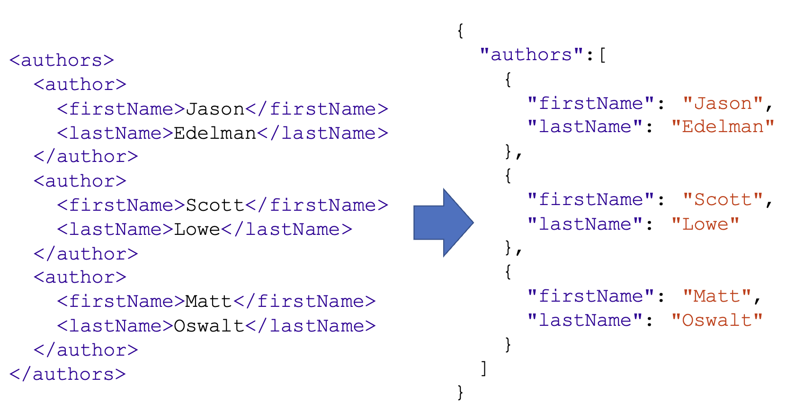
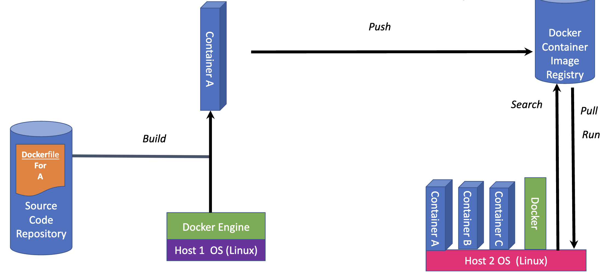

DevOps
Table of Contents
Data Formats
We need a standard format to allow a diverse set of software to communicate with each other, and for humans to interface with it. All of the data formats that we’ll discuss in this chapter have broad support over a multitude of languages and operating systems.
-
XML - machine to machine
-
JSON - machine to machine
-
YAML – human to machine
XML
XML is a markup language that defines a set of rules for encoding documents in a format that is both human-readable and machine-readable. The design goals of XML emphasize simplicity, generality, and usability across the Internet.
Features
-
XML files end in
.xml. -
Root, children nodes, attributes.
-
Namespaces (Used to resolve naming conflicts).

Benefits
-
Support inter-business transactions.
-
Maintain data integrity.
- Verify data accuracy.
- Automatically customize data presentation for different users.
- Store data consistently across multiple platforms.
-
Improve search efficiency.
-
Design flexible applications.
JSON
JSON (JavaScript Object Notation) is a lightweight data-interchange format. It is easy for humans to read and write. It is easy for machines to parse and generate.
Features
-
JSON files end in
.json. -
The whole thing is wrapped in curly braces {}. This is very common, and it indicates that JSON objects are contained inside.
-
Think of “objects” as key-value pairs, or dictionaries.
-
JSON objects always use string values when describing the keys.
-
JSON list indicated by the square brackets [].
-
Data Types:
- Number
- String
- Boolean
- Array
- Object
- Null

Working with JSON in Python
- JSON enjoys wide support across a myriad of languages
- You will often be able to simply import a JSON data structure into constructs of a given language, simply with a one-line command
import json
item = {
"name": "egg",
"price": 0.99,
}
with open('data.json', 'w') as f:
json.dump(item, f) # write python object to json file
with open('data.json', 'r') as f:
data = json.load(f) # load json data into python object
print(data) # {'name': 'egg', 'price': 0.99}
YAML
YAML (YAML Ain't Markup Language) is a human-readable data serialization language. It is commonly used for configuration files, automation workflow, or providing a data set to work with.
Features
-
YAML files end in
.yamlor.yml. -
YAML is a superset of JSON.
-
YAML is a human-readable data serialization language.
-
YAML is a strict indentation language.
-
YAML is case sensitive.

Working with YAML in Python
import yaml
item = {
"name": "egg",
"price": 0.99,
}
with open('data.yaml', 'w') as f:
yaml.dump(item, f) # write python object to yaml file
with open('data.yaml', 'r') as f:
data = yaml.load(f, Loader=yaml.FullLoader) # load yaml data into python object
print(data) # {'name': 'egg', 'price': 0.99}
Note: The yaml module is not part of the standard library, so you’ll need to install it first. You can do so with pip:
pip install pyyaml
Git

Source code management systems are essential for any software development project. They allow you to keep track of your software at the source level. You can track changes, revert to previous stages, and work on different branches at the same time. Code is organized within a repository.
Setting Up Git
git config --global user.name <name> # Set user name
git config --global user.email <email> # Set user email
Commit
-
Specific snapshot within the development tree.
-
Collection of changes applied to a project's files.
-
Metadata about the change.
-
Identified by a unique
SHA-1 Hash.
git commit -m "Add new feature" # Commit changes
git show 5b8e4f # Show commit details
Tag
-
Represents a single commit.
-
Often human-friendly.
-
Version number.
git tag v1.0.0 # Create a tag
git tag # List all tags
git show v1.0.0 # Show tag details
Branch
-
A history of successive changes to code.
-
A new branch may be created at any time, from any existing commit.
-
May represent versions of code.
git branch # List all branches
git branch feature/add-btn # Create a new branch
git checkout feature/add-btn # Switch to a branch
git checkout -b feature/add-btn # Create and switch to a branch

Terminology
-
Working Files: Files that are currently on your file system.
-
Staging Area: Files that are ready to be committed. Only files that have been staged will be committed.
-
Checkout: Replace the current directory files with those from a specific branch or commit.

Distributed Version Control System
-
Clone: Creates a full copy of repository on your local machine.
-
Fetch: Update your local repository with changes from non-local repositories (i.e. GitHub).
-
Fork: Create a copy of a repository in a remote location (i.e. GitHub).
git clone https://github.com/username/repo.git # Clone a repository
git fetch origin # Fetch changes from remote repository
Setting Up A Repository
- Create a new repository from cero on the command line
git init # Initialize a new repository
git remote add origin https://github.com/username/repo.git # Add a remote repository
- Clone an existing repository
git clone https://github.com/username/repo.git # Clone a repository
cd repo # Change directory to the repository
Inspecting A Repository
-
git diff: Show changes between commits, commit and working tree, etc.
-
git status: Display the state of the working directory and the staging area.
-
git blame: Examine the history of a file and get context as to who made changes and when.
-
git log: Show commit logs.
git diff ./file.txt # Show changes between commits, commit and working tree, etc.
git status # Display the state of the working directory and the staging area
git blame ./file.txt # Examine the history of a file
git log # Show commit logs

Undoing Commits And Changes
-
git revert: Create a new commit that undoes the changes from a previous commit.
-
git commit --amend: Change the last commit.
-
git reset --soft: Only resets the HEAD to the commit you specified.
-
git reset --mixed: Resets the HEAD to the commit you specified and resets the staging area.
-
git reset --hard: Resets the HEAD to the commit you specified and resets the staging area and working directory.
git revert 5b8e4f # Create a new commit that undoes the changes from a previous commit
git commit --amend # Change the last commit
git reset --soft 5b8e4f # Only resets the HEAD to the commit you specified
git reset --mixed 5b8e4f # Resets the HEAD to the commit you specified and resets the staging area
git reset --hard 5b8e4f # Resets the HEAD to the commit you specified and resets the staging area and working directory
Pull Requests
Pull requests are a mechanism for a developer to notify team members that they have completed a feature. Once their feature branch is ready, the developer files a pull request via their SCM (Source Control Management) system. This allows team members to review the changes and discuss any potential modifications.

Merge
A merge is the act of integrating the changes from one branch or commit into a second branch. The result is a new commit that is a combination of the two. If a merge fails, git will notify you with a merge conflict. Merge conflixts must be fixed manually, and then added and committed.
NOTE: Merge conflicts occur when two branches have changed the same part of the same file, and then those branches are merged together. Git will not be able to automatically determine what the correct content should be or if both changes should be included, so you must inspect and resolve the conflict manually.
git merge feature/add-btn # Merge a branch into the current branch
Branch Workflow
Feature branching is a git workflow that allows multiple developers to work on a particular feature in isolation. Each feature is developed in a dedicated branch, and once it is ready, it is merged into the main branch.

Virtualization

Hardware Virtualization
-
Abstract underlying physical hardware from operating systems and applications.
-
Allows multiple guest operating systems to run in parallel.
-
Physical resources are shared among all guest OS and virtualization software.
Terminology
-
Host OS/Host Machine: Physical hardware/server.
-
Hypervisor: The virtualization software, acts as the true OS for the server.
-
Guest OS/Virtual Machines: Instances of the virtualized OS, running in emulated environments. Guest thinks it’s running on real hardware.
Advantages
-
Sandbox: Isolated from the host OS.
-
Networked: Access over the network.
-
Portable: Run on any host OS.
-
Snapshots: Saved and restored to previous states.
Docker

Docker is a platform for developers and sysadmins to develop, deploy, and run applications with containers. The use of Linux containers to deploy applications is called containerization.
Benefits
-
Flexible: Even the most complex applications can be containerized.
-
Lightweight: Containers leverage and share the host kernel.
-
Interchangeable: You can deploy updates and upgrades on-the-fly.
-
Portable: You can build locally, deploy to the cloud, and run anywhere.
-
Scalable: You can increase and automatically distribute container replicas.
-
Stackable: You can stack services vertically and on-the-fly.
Containers vs VMs
Container are isolated, but share OS and, where appropriate, bins/libraries. VMs are isolated, but each has its own OS, bins, and libraries. This results in significantly faster deployment, much less overhead, easier migration and faster restart.

Basic Docker Workflow

Image
Persisted snapshot that can be run as a container.
-
images: List all local images.
-
run: Create a container from an image and execute a command in it.
-
tag: Tag an image.
-
pull: Download an image from a registry.
-
rmi: Delete a local image.
docker images # List all local images
docker run -it ubuntu /bin/bash # Create a container from an image and execute a command in it
docker tag ubuntu my-ubuntu # Tag an image
docker pull ubuntu # Download an image from a registry
docker rmi ubuntu # Delete a local image
Container
Runnable instance of an image.
-
ps: List all running containers.
-
ps -a: List all containers (running and stopped).
-
top: Display processes of a container.
-
start: Start a stopped container.
-
stop: Stop a running container.
-
pause: Pause all processes within a container.
-
rm: Delete a container.
-
commit: Create an image from a container.
docker ps # List all running containers
docker ps -a # List all containers (running and stopped)
docker top <container_id> # Display processes of a container
docker start <container_id> # Start a stopped container
docker stop <container_id> # Stop a running container
docker pause <container_id> # Pause all processes within a container
docker rm <container_id> # Delete a container
Image vs Container

Dockerfile
Dockerfile is a text document that contains all the commands a user could call on the command line to assemble an image. Can be versioned in a version control system like Git or SVN, along with all dependencies. Docker Hub can automatically build images based on dockerfiles on Github WorkFlows.
- Configuration is done in a
Dockerfile.
FROM ubuntu
ENV DOCK_MESSAGE Hello My World
ADD dir /files
CMD ["bash", "echo $DOCK_MESSAGE"]
The above Dockerfile will create an image from the ubuntu image, set an environment variable, add a directory to the image, and run a command.
- Run the following commands to build and run the image:
docker build . # Build an image from a Dockerfile
docker inspect <image_id> # Return low-level information on Docker objects
Mount Volumes
Volumes allow data to persist beyond the lifetime of a container.
docker run -it -v /hostLog:/log ubuntu # Mount a volume to a container
Run a second container, volume can be shared between containers.
docker run -it --volumes-from <container_id> ubuntu # Mount a volume from another container
Publish Port
Port mapping allows a container to expose a port to the host.
docker run -p 8080:80 nginx # Publish a container's port to the host
This will allow you to access the container's port 80 from the host's port 8080.
-
8080Host Port (computer running the container) -
80Container Port (inside the container)
You can link containers together, so that they can communicate with each other.
docker run --link <container_id>:<alias> <image> # Link a container to another container
Docker Compose
Docker Compose is a tool for defining and running multi-container Docker applications. With Compose, you use a YAML file to configure your application’s services. Then, with a single command, you create and start all the services from your configuration.
- Configuration is done in a
docker-compose.ymlfile.
version: "3"
services:
postgres:
image: postgres
environment:
POSTGRES_PASSWORD: root
ports:
- "5432:5432"
volumes:
- db:/var/lib/postgresql/data
networks:
- postgres
pgadmin4:
image: dpage/pgadmin4
environment:
PGADMIN_DEFAULT_EMAIL: pgadmin4@pgadmin.com
PGADMIN_DEFAULT_PASSWORD: admin
ports:
- "5050:80"
networks:
- postgres
volumes:
- pgadmin:/var/lib/pgadmin
networks:
postgres:
driver: bridge
volumes:
db:
pgadmin:
The above docker-compose.yml file will create two services, postgres and pgadmin4. The postgres service will use the postgres image, and the pgadmin4 service will use the dpage/pgadmin4 image. The volume is used to persist the data of each service. The network is used to connect both services with each other.
- Run the following commands to start and stop the services:
docker-compose up # Create and start all the services from your configuration
docker-compose down # Stop and remove containers, networks, images, and volumes
Portainer
Portainer is a lightweight management UI which allows you to easily manage your Docker host or Swarm cluster.
-
Portainer Agent: A container that runs on each Docker host and Swarm manager. It is responsible for managing the local Docker environment.
-
Portainer Server: A container that runs on the Docker host and is responsible for managing the Portainer Agent.
Installation
- Run the following commands to install Portainer:
docker volume create portainer_data
docker run -d -p 8000:8000 -p 9443:9443 --name portainer --restart=always -v /var/run/docker.sock:/var/run/docker.sock -v portainer_data:/data portainer/portainer-ce:latest
-
Open your web browser and navigate to
http://localhost:8000. -
Create an admin user and password.
-
Select
Localand clickConnect. -
You will be redirected to the Portainer dashboard.
Ansible

Ansible is an open-source IT automation tool that simplifies and automates various manual IT processes, including provisioning, configuration management, application deployment, and orchestration.
Ansible uses a declarative language called YAML to define automation tasks, which makes it easy to read and understand.
Ansible is agentless, which means it doesn’t require any software or agents to be installed on the target hosts (managed nodes).
SSH Or WinRM
Ansible communicates with the managed nodes using SSH (for Unix-based systems) or WinRM (for Windows systems).
ansible_ssh_user: root
ansible_ssh_pass: password
The above configuration will allow Ansible to communicate with the managed nodes using SSH.
Inventory
Ansible uses an inventory file that lists the IP addresses or hostnames of the managed nodes. This inventory can be static (defined in a file) or dynamic (generated programmatically).
webservers:
hosts:
web1:
web2:
web3:
The above inventory file contains a list of hosts in the webservers group.
Playbook
A blueprint of automation tasks that are executed with limited manual effort across an inventory of IT solutions. Playbooks tell Ansible what to do and how to do it. They are written in YAML and can be used to automate a wide range of tasks.
- name: Install Apache
hosts: webservers
become: true
tasks:
- name: Install Apache
apt:
name: apache2
state: present
- name: Start Apache
service:
name: apache2
state: started
The above playbook will install Apache on all the hosts in the webservers group.
Task
The individual steps that Ansible executes. Tasks are defined in playbooks and can be used to install packages, configure services, and more.
- name: Install Apache
apt:
name: apache2
state: present
The above task will install Apache on the managed node.
Role
A way to break down complex tasks into smaller, more manageable pieces. Roles contain lists of tasks that perform the work you’ve configured them to do.
- name: Install Apache
hosts: webservers
become: true
roles:
- apache
The above playbook will install Apache on all the hosts in the webservers group using the apache role.
Facts
The way of getting data from systems. Facts can be used in playbook variables and can be disabled if not required.
- name: Gather facts
hosts: all
gather_facts: true
tasks:
- name: Print facts
debug:
var: ansible_facts
The above playbook will gather facts from all the hosts and print them.
Modules
Ansible modules are standalone scripts that can be used inside playbooks to automate tasks. They are used to perform tasks such as installing packages, copying files, and managing services.
- name: Install Apache
hosts: webservers
become: true
tasks:
- name: Install Apache
apt:
name: apache2
state: present
The above playbook uses the apt module to install Apache on the managed node.
Variables
Ansible playbooks use a double curly brace {{}} syntax to reference variables. Variables can be defined in playbooks, roles, and inventory files.
- name: Informative message
hosts: webservers
tasks:
- name: Hostname and port
debug: msg="{{ ansible_hostname }} is running on port {{ apache_port }}"
The above playbook will print the value of the ansible_hostname and apache_port variables.
Terraform

Terraform is an infrastructure as code (IaC) tool for provisioning cloud resources. It is cloud-agnostic and allows you to define your infrastructure in a declarative configuration language.
Terraform then creates an execution plan that defines what will be done to reach the desired state, and then executes it to build the described infrastructure.
Terraform uses a declarative language called HCL (HashiCorp Configuration Language) to define infrastructure.
Terraform supports a wide range of cloud providers, the most popular being AWS, Azure, Google Cloud, and DigitalOcean.
Configuration
Terraform configuration files are used to define the infrastructure that you want to create. These files are written in HCL and have a .tf extension.
provider "aws" {
region = "us-east-1"
}
resource "aws_instance" "example" {
ami = "ami-0c55b159cbfafe1f0"
instance_type = "t2.micro"
}
resource "aws_s3_bucket" "example" {
bucket = "mybucket"
acl = "private"
}
The above configuration file will create an EC2 instance and an S3 bucket in the us-east-1 region.
Commands
-
terraform init: Initialize a new or existing Terraform configuration.
-
terraform plan: Generate and show an execution plan.
-
terraform apply: Builds or changes infrastructure according to Terraform configuration files.
-
terraform destroy: Destroy the Terraform-managed infrastructure.
-
terraform validate: Validates the Terraform files.
-
terraform fmt: Rewrites Terraform configuration files to a canonical format.
-
terraform output: Read an output from a state file.
-
terraform refresh: Update local state file against real resources.
Local State
Terraform stores information about the resources it has built in a state file. This important file contains all of the data that Terraform needs to change, update, and delete infrastructure.
When running terraform init, Terraform will create a .terraform directory in your working directory. This directory contains the state file.
terraform init # Initialize a new or existing Terraform configuration
The above command will initialize a new or existing state file in the .terraform directory.
Remote State
Terraform can store state files remotely, which allows you to share the state file with other team members and use it to manage infrastructure across multiple workspaces.
terraform {
backend "s3" {
region = "us-east-1"
bucket = "mybucket"
key = "path/to/my/key"
}
}
The above configuration will store the state file in an S3 bucket.
Plan / Apply
Terraform uses a two-step process to build infrastructure. The first step is to generate an execution plan, and the second step is to apply that plan to build the infrastructure.
- To generate an execution plan, run the following command:
terraform plan # Generate and show an execution plan
Terraform plan will show you what resources will be created, modified, or destroyed as follows:
-
+to indicate that a resource will be created. -
-to indicate that a resource will be destroyed. -
~to indicate that a resource will be updated. -
+/-to indicate that a resource will be destroyed and re-created.
- To apply the execution plan and build the infrastructure, run the following command:
terraform apply # Builds or changes infrastructure according to Terraform configuration files
Terraform Variables
Terraform variables are used to parameterize your configuration. They allow you to input data into your configuration and use it to create resources.
- Variables can be defined in a
variables.tffile.
variable "region" {
description = "The AWS region to deploy to"
type = string
default = "us-east-1"
}
- Variables can be set using a
terraform.tfvarsfile.
region = "us-west-2"
- Variables can be used in your configuration files using the
varkeyword.
provider "aws" {
region = var.region
}
- Variables can be set via
command line.
terraform apply -var 'region=us-west-2'
- Variables can be read from
environment variables.
export TF_VAR_region=us-west-2